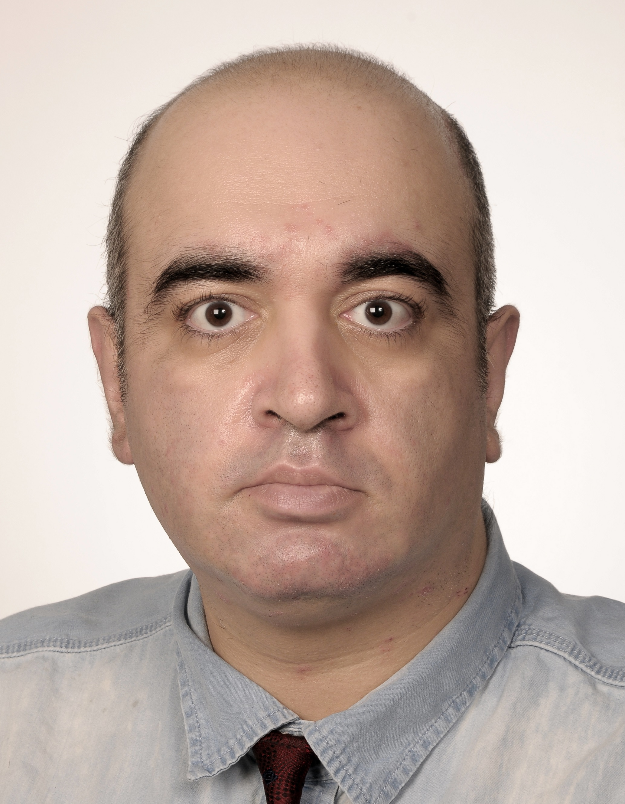

Who am I?
My name is Bahman Soltani.
I was originally born in Esfahan, Iran. Currently I'm a student in Berlin studying for a Master of Computer Science at IU International University of Applied Science. Back to Iran I was working as a developer mainly web and working with different CRM and EPR systems for about 14 years of experience. My biggest passion in my life is about programming and learning new technologies of developments.
For my undergraduate studies I studied first at Azad University of Khomeinishahr for Associate Degree of Computer Science from January 2007 to June 2010 and then for Bachelor in Software Engineering I studied at Azad University of Najafabad from January 2011 to April 2014. After completing Associate Degree of Computer Science, I worked as an intern at Khatsaz Company and used my knowledge for developing their desktop version of their administrable systems including accounting, management and warehouse. After my successful graduation with a Bachelor in Software Engineering I decided to continue working on software development with using the knowledge I achieved at university, so here is a summary of my work experience:
I was originally born in Esfahan, Iran. Currently I'm a student in Berlin studying for a Master of Computer Science at IU International University of Applied Science. Back to Iran I was working as a developer mainly web and working with different CRM and EPR systems for about 14 years of experience. My biggest passion in my life is about programming and learning new technologies of developments.
For my undergraduate studies I studied first at Azad University of Khomeinishahr for Associate Degree of Computer Science from January 2007 to June 2010 and then for Bachelor in Software Engineering I studied at Azad University of Najafabad from January 2011 to April 2014. After completing Associate Degree of Computer Science, I worked as an intern at Khatsaz Company and used my knowledge for developing their desktop version of their administrable systems including accounting, management and warehouse. After my successful graduation with a Bachelor in Software Engineering I decided to continue working on software development with using the knowledge I achieved at university, so here is a summary of my work experience:
December 2017 - August 2020 Khatsaz (Tehran, Iran)
- Developed web application for administration, warehouse management and accounting systems on local network.
- Set up and managed the relationships with other offices and agents to support the main office’s and the agents’ requirements are met.
- Worked with C#, MVC, JavaScript, jQuery, SQL Server, Multilayered Architecture and Design Patterns, dotnet and razor components and different NuGet packages and TFS for source control.
- Worked with TFS and JIRA
- Based on Scrum methods.
June 2016 - November 2017 Varanegar (Tehran, Iran)
- Developed web and desktop based administration and management applications for distribution projects including reviewing, administrating and visiting the works done or not in the process of distribution processes on local network based on Agile methods.
- Followed the relationships with other departments including tests and customer service to support the clients’ requirements are met.
- Worked with C# and SQL Server in both Windows Applications and Web Applications.
- Worked with Entity Framework, ADO.NET, Multilayered Architecture, different Design Patterns, MVC.Net, JavaScript, jQuery, Kendo and DevExpress and dotnet components and different NuGet packages.
- Worked with C#, MVC, JavaScript, jQuery, SQL Server, Multilayered Architecture and Design Patterns, dotnet and razor components and different NuGet packages and TFS for source control.
- Worked with TFS and JIRA
- Based on Scrum methods.
January 2007 - March 2016 Khatsaz (Esfahan, Iran)
- Developed desktop application for administrative system including accounting, mailing and warehouse on local network.
- Followed the relationships with other departments including accounting and management to support the office’s requirements are met.
- Worked with SQL Server, C#, ADO.NET, OOP, Multilayered Architecture and Design Patterns, dotnet and razor components.
- Based on Scrum methods.

In my free time you will find me:
-
Programming and designing
-
Diving deep into my current Programming-Projects
-
Doing some sports like dancing, walking and swimming
-
Reading history
-
Exploring nature and my environment